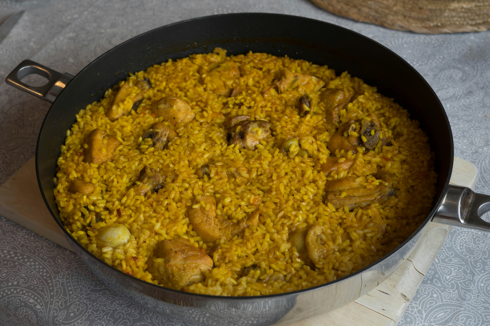

Arroz con Pollo

Traditional chicken and rice or arroz con pollo is common in many central and south american cultures. The dish is simple yet deep in flavor and heats up well as leftovers.
Ingredients
- 1/4 cup olive oil
- 1(3 to 4 pound) whole chicken cut into 8 pieces
- salt and freshly ground black pepper
- 1 large onion, coarsely chopped (about 2 1/2 cups)
- 1 medium green bell pepper, coarsely chopped (about 1 1/2 cups)
- 3 garlic cloves, minced
- 1 8 ounce can tomato sauce
- 1 tbsp annatto-based seasoning powder (Bijol or Goya)
- 1 bay leaf
- 1 tsp ground dried oregano
- 1/4 tsp ground cumin
- 1 cup dry white wine or 1 can beer
- 1/2 tsp ground white pepper
- 1 cup Valencia or other short grain rice
- 1 cup parboiled rice (converted rice)
- 3 cups chicken broth
- 8 ounces frozen and thawed or fresh sweet peas
- 1 (4 ounce) jar pimentos, drained and diced
Steps
- Preheat the oven to 325
- Heat the oil in a large dutch oven over medium high heat
- Season chicken with salt and pepper
- Sear the chicken in batches skin side down for about 5 minutes
- Transfer the chicken to a plate and set aside
Home